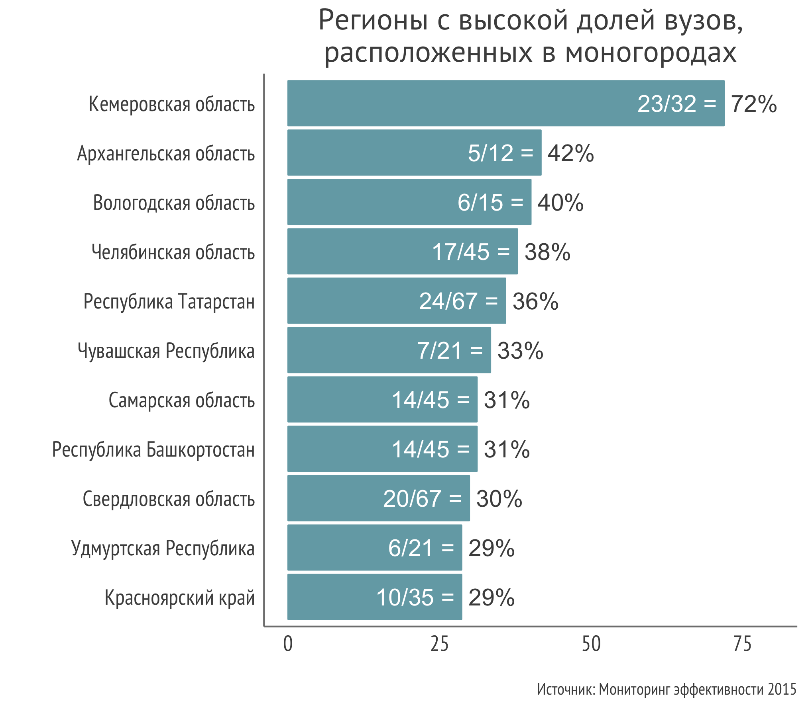

Согласно постановлению Правительства от 29 июля 2014 года №709 муниципальное образование получает статус моногорода, в одном из двух случаев:
За 319 муниципальными образованиями закреплён статус моногорода. В них проживает 13 миллионов человек. Хотя бы один вуз присутствует в 91 населённом пункте, а общее число вузов в них составляет 202 (11,4% всех вузов в России).
В 38 регионах присутствует хотя бы 1 моногород, в котором расположен хотя бы один вуз. Среди всех регионов выделяется Кемеровская область. Её лидерство обусловлено большим числом вузов в городах с развитым угольным производством — Прокопьевске (4 вуза) и Новокузнецке (7 вузов). На графике показаны 11 регионов с наивысшим значением показателя (для 10 и 11 мест значения совпадают). 
В больших городах расположено больше вузов. Кроме Благовещенска (35 037 жителей), все города из списка, представленного ниже, входят в топ-11 моногородов по численности населения на начало 2016 года.
65% вузов в моногородах являются филиалами государственных университетов. Вне деления на головные вузы и филиалы, рынок высшего образования в монопрофильных населённых пунктах формируется прежде всего за счёт государственных учебных заведений.
Вряд ли можно найти характеристику, объединяющую вузы, попавшие в топ-11 по числу филиалов. Зато можно заметить, что в нём есть университеты и технического и общественнонаучного профиля. Доля филиалов, открытых в моногородах, варьируется среди них от 7% (РАНХИГС) до 100% (Кемеровский и Кузбасский университеты).
Студенты, обучающиеся в моногородах, предпочитают учиться заочно. У этого явления может быть несколько объяснений - от низких доходов семей, вынуждающих подростков раньше выходить на рынок труда, до необходимости получить высшее образование без прерывания стажа работы на производстве.
Только 1% студентов в моногородах обучается на программах магистратуры. Одно из возможных объяснений состоит в том, что местный рынок труда не требует специфических навыков, приобретаемых на этой ступени обучения.
В моногородах сконцетрировано промышленное производство, и, поэтому, высокая доля инженеров среди студентов выглядит естественно. Неожиданной является высокая доля студентов, изучающих педагогические науки.
В общем случае приведённый контингент студентов считается по формуле: 1 * число очных студентов + 0,25 * число очно-заочных студентов + 0,1 * число заочных студентов. Этот показатель используется, чтобы акцентировать внимание на важности физического присутствия студента в университете.
Вернуться к карте